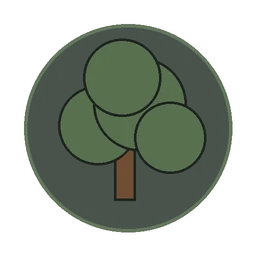
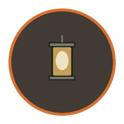
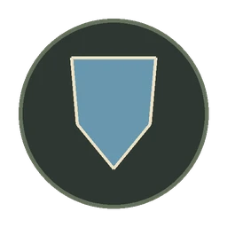
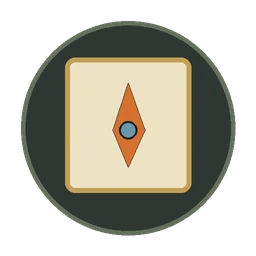
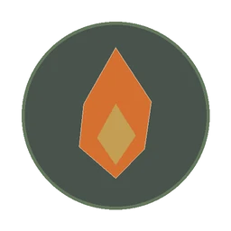
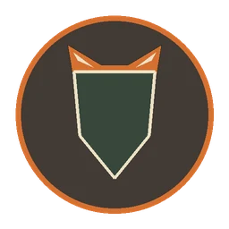
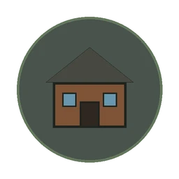

Meu painel
Bem-vindo à toca.
Tudo do servidor num lugar só: escolha para onde ir.
–no servidor
–no Discord

Árvore de Talentos
Libere o VeinMiner, o Tree Capitator e bônus para jogar mais.
Abrir
Comunidade ao vivo
Quem está jogando, enquetes e novidades.
Abrir
Rankings
Nível, tempo de jogo, duelos e kills.
Abrir
Mural
O que mudou no servidor e na Kiza.
Abrir
Minha página
Sua página pessoal na Vulpus, com links e o seu cartão do Minecraft. Para Kitsunes e parceiros.

Minha conta
Seu nível, tempo de jogo, histórico e privacidade.
Abrir
Como entrar no servidor
Endereço, versão e o passo a passo para chegar na toca.
Abrir